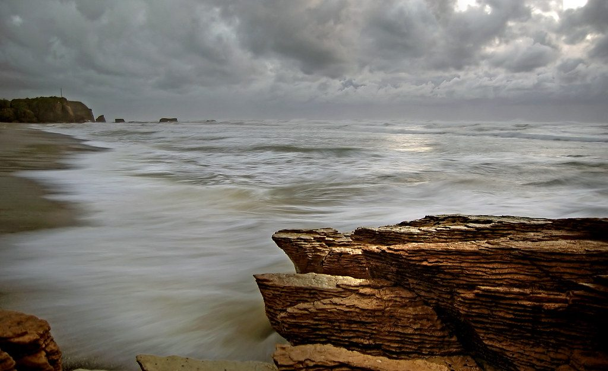

このサイトについて
このサイトは、cafe RED BRICKSさまのホームページ案として制作した試作です。口コミのページは実際の声ではなく、イメージ例を掲載しています。お店の情報は、確認でき次第、差し替えていきます。

お問い合わせ
ご来店前の確認や、営業時間・メニューのお問い合わせは、お電話かInstagramからどうぞ。
090-3054-9610
このサイトは、cafe RED BRICKSさまのホームページ案として制作した試作です。口コミのページは実際の声ではなく、イメージ例を掲載しています。お店の情報は、確認でき次第、差し替えていきます。
ご来店前の確認や、営業時間・メニューのお問い合わせは、お電話かInstagramからどうぞ。
090-3054-9610掲載写真はフリー素材のイメージで、店舗の実際の様子ではありません。他の地域・海外で撮影されたものや撮影地不明のものを含みます。